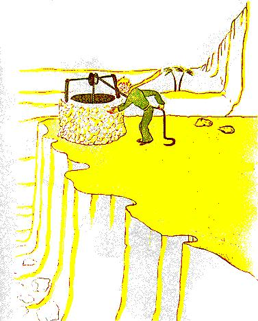

XXV
- Na daoine seo, arsa an prionsa beag, pulcann siad isteach i
luastraenacha, ach níl a fhios acu níos mó cad atá á lorg acu. Mar
sin bíonn siad ag síorbhogadaigh agus ag gabháil umpeall i
ndiaidh a dtóna...
Agus ar seisean ina theannta sin:
- Ní fiú an tairbhe an trioblóid...
An tobar a raibh muidii ndiaidh teachtair, ní raibh sé cosúil le
gnáth-thobar sa Sahára. Na toibreacha sa Sahára, níl iontu ach
POill a tochlaíodh sa ghaineamh.
Bhí an ceann seo cosúil le tobar sráidbhaile. Ach ní raibh
sráidbhaile ar bith lefeiceáil, aguscheap mé gurag brionglóideach
a bhí mé.
- Fá sé an-ait, arsa misc leisan phrionsa beag, tá gach rud arfáil:
an ulóg, an stópa agus an téad....
Rinne sé gáire, fuair greim ar an téad, agus chuir an ulóg ar
obair. Chuiran ulóg gíoscán aisti mar a dhéanann seanchoileach
gaoithe nuair a bhíonn an ghaoth faoi chónaí le fada.
- Éist, arsa an prionsa beag, tá an tobar múscailte againn agus
tá sé ag gabháil cheoil...
Níor mhaith liom go rachadh sé thar a acmhainn:
- Lig domsa, arsa misc leis, tá sé trom agat.
D'ardaigh mé an stópa go mallréidh go bruach. Shocraigh mé
go daingean ansin é. Bhí mo chluasa lán go fóill le ceolna hulóige
agus, san uisce, a raibh creathán ann i gcónaí, ba léir dom an
ghrian ar crith.
-Tátartormindiaidh anuiscesin,arsaan prionsa beag, tabhair
deoch dom...

Agus is ansin a thuig mé cad é abhí á lorg aige! D'ardaigh mé
an stópa chomh fada lena bhéal. D'ól sé, ashúile dúnta aige. Bhí
an rud chomh haoibhinn le hoíche chinn féile. Ba mhó ar fad an
t-uisce sin ná cothú coirp. Ba rud éa d'eascair as an turas faoi na
réaltaí, as ceol na hulóige, as saothar mo dhá lámh. Rud ab ea é
a dhéanfadh leas an chroí, ar nós féirín. Nuair a bhí mé i mo
ghasúr beag, ba iad solas an chrann Nollag, ceol Aifreann an
mheán oíche, aoibh ghealgháireach na ndaoine, ba iad sin ba
chúis leis an loinnir a bhraith mé sa bhronntanas Nollag a bhí
faighte agam.
-Muintir an domhain seo agat, arsa an prionsa beag, cuireann
siad cúig mhíle rós ag fás san aon ghairdín amháin....agus níl fáil
acu ar an rud atá á lorg acu...
- Níl fáil acu air, arsa mise leis...
- Agus ina dhiaidh sin, an rud atá á lorg acu, bheadh sé le fáil
acu in aon rós amháin, nó i mbraon beag uisce...
- Cinnte dearfa, arsa mise.
Agus arsa an prionsa beag ina theannta sin:
- Ach tá na súile gan radharc. Ní mór a chuartú leis an chroí.
Bhí mo dhóthain ólta agam. Bhí tarraingt m'anála agam arís.
Le breachadh an lae, bíonn dath na meala ag an ghaineamh.
D'fhág an dath sin na meala aoibhneas orm fosta. Cén fáth mar
sin a raibh mothú bróin orm...
- Caithfidh tú do ghealltanas a chomhlíonadh, a deir an
prionsa beag liom go séimh. Bhí sé i ndiaidh suí síos in aice liom
arís
- Cén gealltanas é sin:
- Tá a fhios agat....mantóg fá choinne mo chaorach...tá mé
freagrach as an bhláithín úd!
Tharraing mé mo chúpla iarracht líníochta amach as mo
phóca. Fuair an prionsa beag amharc orthu agus dúirt sé, agus é
ag gáire:
Na crainn bhaobab sin agat, chuirfeadh siad ceirtlíní cáil i do
cheann....
-Ó!
Agus mise chomh mórálach sin as mo chuid crann baobab!
An madra rua sin agat....a chuid cluas...tá siad cineál cosúil le
hadharca.--agus tá siad rófhada!
Agus rinne sé gáire arís.
- Níl sé sin ceart ná cóir uait, a mhaicín, ní raibh mé in ann rud
ar bith a líniú ach nathracha boa dúnta agus nathracha boa ar
oscailt.
-Ó, déanfaidh sin gnóthaí, ar seisean.
Línigh mé mantóg mar sin. Agus chuaigh deann trí mo chroí
nuair a thug mé dó í
- Tá pleananna agat nach ligfidh tú liom...
Ach níor thug sé freagra orm. Ar seisean liom:
Tá a fhios agat; mé ag titúm ar anTalamh, tharla sé bliain agus
an lá inniu..-
Ansin tar éis tamall ina thost dó, dúirt sé arís:
Tháinig mé anuas i ngar don áit seo...
Agus tháinig lasadh ma ghrua.
Agus mhothaigh mé arís, gan a thuigbheáil cén fáth, cineál de
bhuaireamh aisteach. Ach d'éirigh ceist i m'intinn
-Mar sin, ní de thaisme a bhí tú siúl ar an dóigh sin, an
mhaidin ar casadh orm thú, tá seachtain ó shin, tú leat féin, míle
ar shiúil ó aon chónai daonna! Bhí tú ag fiileadh ar an áit ar thit
tú?
Dhearg an prionsa beag san aghaidh arís.
Agus dúirt mé fosta, idir dhá chomhairle:
- As siocair, b'fhéidir, go raidh an bhliain istigh?
Dhearg an prionsa beag san aghaidh arís. Ní thugadh sé
freagra ar cheisteanna riamh ach, nuair a dheargann duine san
aghaidh, ciallaíonn sin "is ea", an ea nach gciallaIonn?
- Á, arsa mise leis, tá eagla orm...
Ach d'fhreagair sé mé:
- Caithfidh tú dul a dh'obair anois. Caithfidh tú filleadh ar an
eitleán sin agat. Fanfaidh mé leat anseo. Tar ar ais tráthnóna
amárach...
Ach ní raibh mé ar mo shuaimhneas go fóill. Bhí mé ag
cuimhneamh siar ar an mhadra rua. Tá an baol ann go mbeidh
tú ag caoineadh beagán má lig tú do dhuine thú a chló...